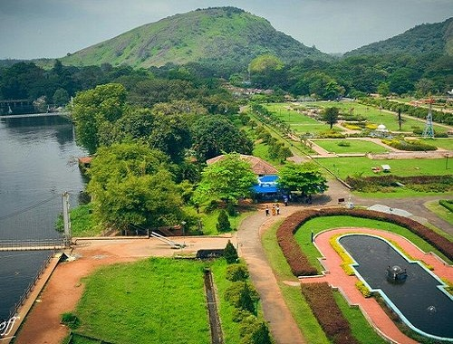

TOP ATTRACTIONS IN PALAKKAD
MALAMPUZHA DAM
Malampuzha Garden in Palakkad district is the only rock-cut garden in South India made by Nek Chand, the renowned artist and winner of the prestigious Padmashree Award. The entire garden is made from broken pieces of bangles, tiles, used plastic cans, tins and other waste materials. Also situated in the gardens is the massive Malampuzha Yakshi (female vampire) built in 1969 by Kanayi Kunhiraman, a greatly respected sculptor from the state.
TIPU SULTAN FORT

Tipu's Fort, also known as Palakkad Fort, is a beautifully maintained edifice in Palakkad district and was an important military base in the past. Rebuilt by Hyder Ali in the 18th century, the fort was under the Mysore rulers until the British took control of the place. It was then used for providing government services during the British era. Named after Hyder's son Tipu Sultan, it is an important historical destination today.It is among the best preserved forts in South India. The thick laterite walls impress all who view it.
DHONI WATERFALLS

A three-hour trek from the base of the Dhoni hills will take you to the pristine beauty of nature and the lush green surroundings will rejuvenate your senses. The trekking starts at the foot of the hills near the Teak plantations. A narrow mountain way is there for four-wheel drives and bikes that lead up to the waterfall; however private vehicles are prohibited from traversing these roads.This 4 km long trekking trail through the lush green environs bestows one with a quiet isolated space to witness nature.